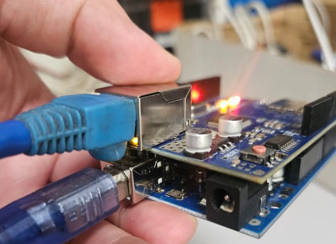

Problema
El controlador ABB IRC5 permite ejecutar trayectorias robóticas con alta precisión, pero la integración con periféricos personalizados de bajo nivel puede requerir hardware adicional, licencias o protocolos industriales más complejos.
Integración industrial · Sistemas embebidos · Comunicación TCP/IP
Diseño e implementación de una arquitectura cliente-servidor mediante sockets TCP/IP para comunicar un controlador industrial ABB IRC5 con un sistema embebido Arduino Mega, permitiendo el intercambio de comandos y estados para coordinar funciones auxiliares de un posicionador robótico.
Volver a proyectos
El controlador ABB IRC5 permite ejecutar trayectorias robóticas con alta precisión, pero la integración con periféricos personalizados de bajo nivel puede requerir hardware adicional, licencias o protocolos industriales más complejos.
Se implementó un canal de comunicación mediante sockets TCP/IP, donde el ABB IRC5 actúa como cliente y el Arduino Mega como servidor. Esta arquitectura permitió enviar comandos, recibir estados y coordinar funciones auxiliares del posicionador robótico.
Programación en RAPID para crear el socket, iniciar la conexión, enviar comandos y recibir respuestas desde el sistema embebido.
Firmware basado en Ethernet.h para escuchar peticiones, procesar mensajes entrantes y ejecutar acciones físicas del posicionador robótico.
Uso de tramas simples para transmitir comandos, confirmaciones de estado, variables de posición y lecturas relacionadas con el control térmico.
Integración con RobotStudio y FlexPendant para visualizar estados, activar comandos y supervisar la respuesta del sistema en la celda robótica.
Se estableció una configuración cliente-servidor, asignando al ABB IRC5 el rol de cliente y al Arduino Mega el rol de servidor TCP.
Se definió el direccionamiento IP estático, el puerto de comunicación y la estructura básica de los mensajes enviados entre ambos sistemas.
Se desarrolló la lógica de socket en RAPID y el firmware en Arduino para recibir, interpretar y responder a las solicitudes del controlador.
Se validó la secuencia de conexión y el flujo de comandos desde RobotStudio antes de ejecutar pruebas físicas en la celda robótica.
Se realizaron pruebas con el FlexPendant para verificar el envío de comandos, la lectura de estados y la sincronización con el posicionador robótico.
Comunicación bidireccional entre el ABB IRC5 y el Arduino Mega.
Control de conexión, envío de comandos y recepción de estados desde el robot.
Supervisión de estados y activación de comandos desde el FlexPendant.
Integración con hardware abierto sin depender de tarjetas o licencias adicionales.
El proyecto permitió validar una alternativa práctica para integrar un controlador industrial ABB IRC5 con un sistema embebido Arduino mediante sockets TCP/IP. La solución facilitó el intercambio de comandos y estados en una arquitectura simple, funcional y adaptable para aplicaciones mecatrónicas auxiliares dentro de una celda robótica.
Ver más proyectos